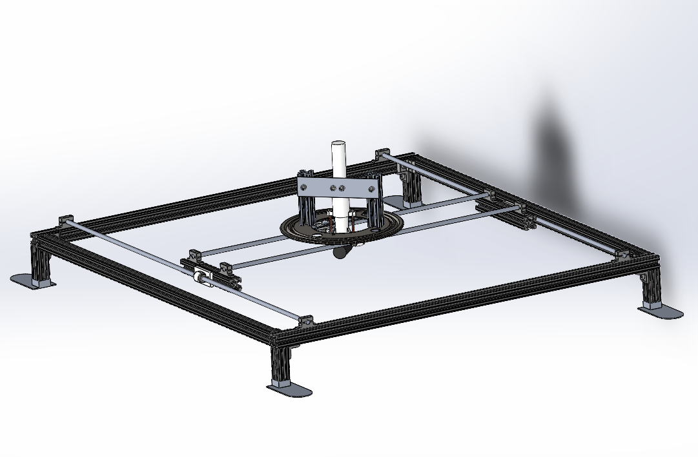
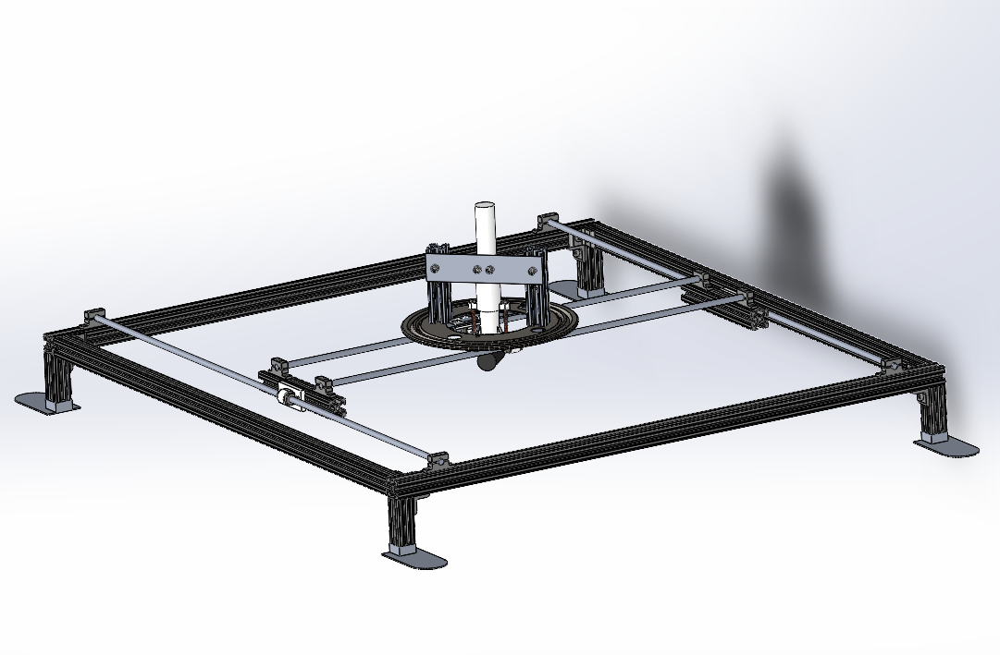

CAD model of the system made in SolidWorks
First functioning prototype

This device was desgined, built, and tested during my internship at Applied Thin Films Inc. during the summer of 2021.
This project allowed me to utilize my skills
and aquire new ones relating to designing systems that feature mechanical and electrical components functioning together. In addition to the physical elements of this
machine, I wrote a G-code generator and simulator in Python to create patterns for the device to execute.
CAD model of the system made in SolidWorks
First functioning prototype